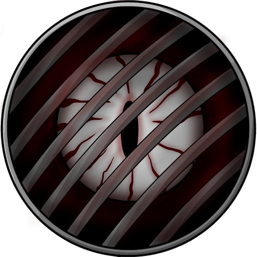
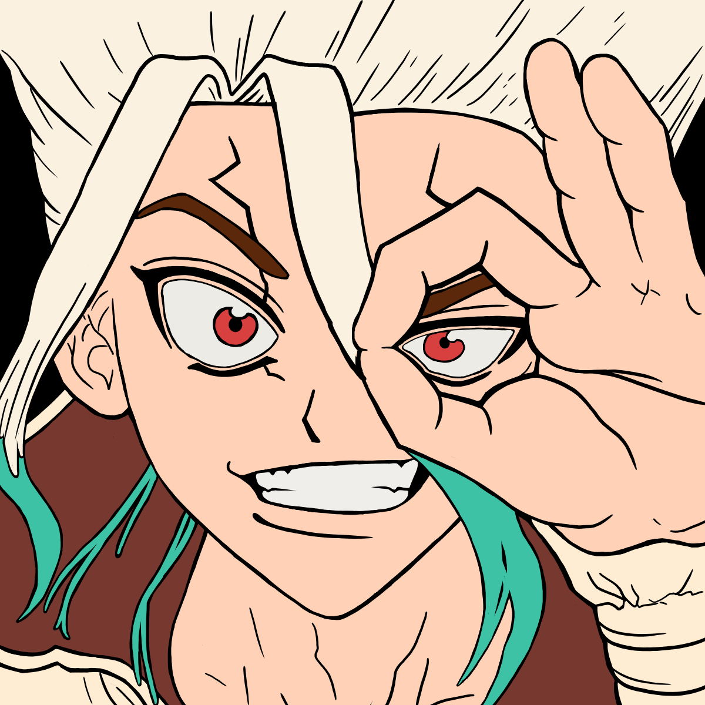
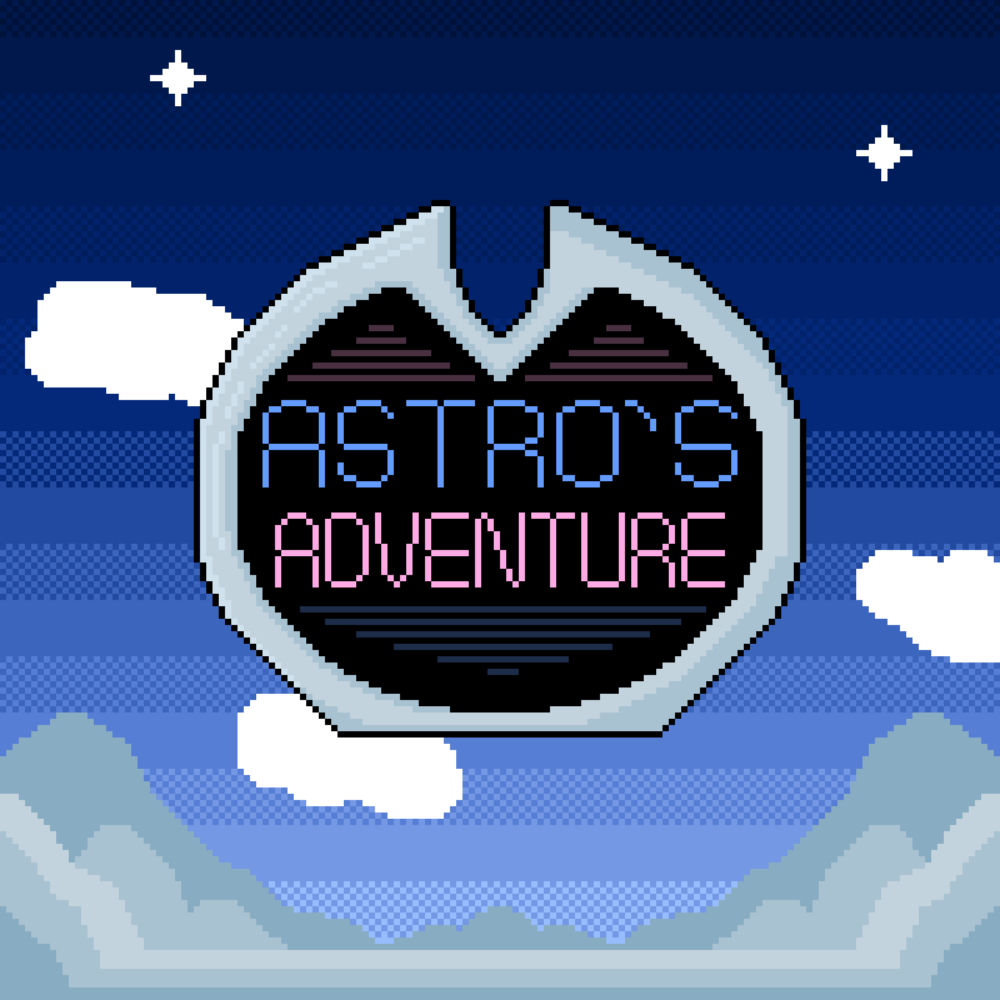

Bienvenido al Blog de Alex Chamba
Creador de Reborn Team
Game Develop, Html, Animación 2D y 3D, Game Design, Escritura,
Programación, UI/UX, Soundtrack, Diseño de Niveles y Personajes.
Programación, UI/UX, Soundtrack, Diseño de Niveles y Personajes.
En este Blog podran conocer la experiencia y vida de Alex Chamba, fundador de Team Reborn. Capacidades, habilidades y proyectos
son aspectos que se exploraran con mas profundidad. Ademas se publicaran entradas sobre varios aspectos desarrolllados por Chamba
y como fue que lo consiguió, sirviendo a modo de guia, tutoriales, o cursos sobre diferentes aspectos.
PROYECTOS
PSYCHO COGNITIVE
Psycho Cognitive es el primer videojuego desarrollado por Alex Chamba sin estar bajo el nombre de Reborn Team
en el motor de programacion por bloques "Scratch". Con un aspecto visual en 2D tomando claras inspiraciones
en la mitica saga de videojuegos de terror "Silent Hill", estas inspiraciones son muy notorias en el diseño de
los enemigos, siendo algunos copias directas de los enemigos de Silent Hill. La historia busca dar una reflexion
para los jugadores, explorando tematicas muy oscuras con varios traumas de por medio como el estres postraumatico
o el trastorno de despersonalizacion, psicosis, abusos, etc.

PERSONA 1: REBORN
Persona 1: Reborn es un Fan-remake creado por un grupo de fanaticos de la saga de videojuegos
"Persona" con Alex Chamba a la cabeza del proyecto lideranbdo y organizando al equipo de
trabajo. Este remake del primer videojuego de la saga "Persona", "Shin Megami Tensei: Persona"
busca renovar el juego original modernizando sus mecanicas, su soundtrack, diseño de personajes,
jugabilidad y experiencia de usuario; Todo esto manteniendo la historia de forma intacta sin
grandes modificaciones. En cuanto a otros aspectos o añadidos tenemos una traduccion completa
al español, doblaje en español para las escenas CGI, scenarios extras, interfaz de usuario
intuitiva, combate mas modernizado, y demas añadidos aunque, la ruta de la Snow Queen Quest no
se encunetra en el juego base, se tiene planeado sacarlo a posteriori como DLC gratuito.

SLENT T
Slent T es un canal de youtube creado por Alex Chamba en donde se tocan temas de interes para el ambito educativo como
sucesos historicos narrados en forma de documental; guias, tutoriales, cursos y consejos sobre todo aspecto relacionado
con la informatica en cuanto al aspecto digital como HTML, CSS, JavaScript, GML, Unity, Game Maker Studio, Godot,
Programacion, lenguajes de programación, edición de videos, fotografia, diseños de personajes, diseño de niveles, diseños
de enemigos, diseños de escenarios, diseño de interfaz de usuario, diseño de experiencia de usuario, escritura, organización
de proyectos, coordinación, gestión, composición de musica, animacion 2D, animacion 3D, diferentes estilos artisticos y en
general, cualquier aspecto relacionado al ambito laboral digital.

ASTRO´S ADVENTURE
Astro´s Adventure es un Videojuego que busca combinar la diversión con la educación de forma didactica y simple, logrando que
los niños pequeños puedan aprender y divertirse al mismo tiempo con un toque de humor, funcionando como un aula virtual
gratuita para todos a traves de un dispositivo movil. Combinando varios generos de videojuegos con una tematica y asignatura
distinta con el fin de darle mas diversidad al entretenimiento sin caer en la repetitividad de hacer lo mismo en los mismos tipos
de escenarios. Usando una estetica PixelArt con colores llamativos para los niños pequeños y un soundtrack inspirado en los
videojuegos de 8 y 16 bits, ademas de agregar doblaje al español completo para poder ir guiando a los niños.
